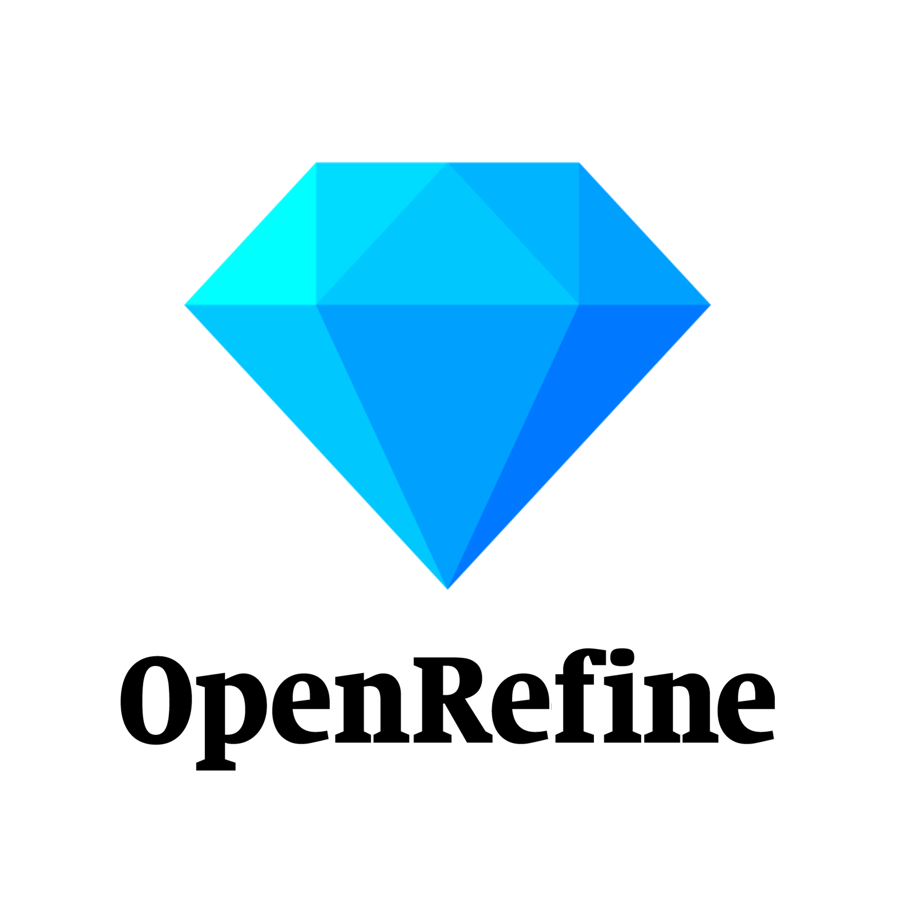

Über das Buch "Kulturerbe kontextualisieren mit Wikidata"
Dieses Buch stellt kommentierte Ressourcen zusammen, die den Einstieg in Wikidata erleichtern sollen. Konkreter Anwendungsbezug ist das Thema Kulturerbe, insbesondere für Bürger(wissenschaftler).
Das Buch ist in vier Kapitel unterteilt, von denen die ersten beiden den inhaltlichen Kontext herstellen und die anderen beiden solche Quellen beschreiben, in denen Nutzer konkrete Hilfen zum Arbeiten in und mit Wikidata finden.
Pro Kapitel werden mindestens vier Quellen aufgelistet - mit jeweils einer kurzen Zusammenfassung zum Inhalt, mindestens drei Schlagworten und dem Verweis auf die (open access verfügbare) Ressource. [Bitte pro Kapitel mindestens 1 Bild ergänzen, z.B. aus einer der Quellen, sofern CC-BY oder CC-0). Die Ressourcen werden vorab in einer kollaborativ kuratierten Bibliographie (bitte hier beitreten) gesammelt und mit dem zusätzlichen Tag "Wiki4Culture" versehen. Die Referenzen werden jeweils im Zitierstil Cicago 17th, full note aus Zotero exportiert. - diese Sätze später wieder entfernen]
Das Buch wurde als Teil der Lehrveranstaltung Open Knowledge im SoSe 2022 von Studierenden verfasst. Weitere Informationen zur Veranstaltung und weiteren Arbeiten im inhaltlichen Zusammenhang mit diesem Buch finden sich auf der zugehörigen Seite auf Wikiversity.
add DOI, License, ..
Wikidata - Enabler von Citizen Science?
Was ist Wikidata?
"Wikidata ist eine freie, gemeinsame, mehrsprachige und sekundäre Datenbank zur Sammlung strukturierter Daten zur Unterstützung von Wikipedia, Wikimedia Commons, der anderen Wikis der Wikimedia-Bewegung und jedem auf der Welt." (Wikidata, n.d.)
Das bedeutet, dass veröffentlichte Inhalte ohne Einschränkungen genutzt und weiterverwendet werden dürfen. Dies gilt sowohl für nicht kommerzielle als auch für kommerzielle Zwecke.
Wikidata entsteht gemeinsam, teils durch automatische Bots, teils durch Wikidata-Nutzer, die in verschiedensten Sprachen Inhalte hinzufügen und verwalten. Hierbei entsteht dann entsprechend die bereits genannte, sekundäre Datenbank mit strukturierten Daten zur vielfältigen Weiterverarbeitung. Die Sammlung besteht aus unterschiedlichen Statements, Eigenschaften und Werten, die dem Leser zusammengesetzt Informationen vermitteln.
Abbildung "Dieses Diagramm eines Wikidata Items zeigt die wichtigsten Begriffe bei Wikidata." von Wikidata unter der Lizenz CC0
Citizen Science | Bürgerwissenschaften
Bürgerwissenschaft (Citizen Science) ist eine Form der Wissenschaft, bei der Projekte von nicht professionellen bzw. Amateurwissenschaftlern durchgeführt werden. Die freiwilligen Citizen Scientists arbeiten häufig mit oder unter Anleitung von Wissenschaftlern oder wissenschaftlichen Institutionen. Mithilfe der Amateurwissenschaftler können Forschende Ziele erreichen, die mit herkömmlichen wissenschaftlichen Methoden zu teuer oder zu zeitaufwendig wären.
Bürgerwissenschaften sind eng mit dem Konzept des „Open Science“ (Offener Wissenschaft) verknüpft. Ziel von Open Science ist es die Wissenschaft einem größeren, allgemeinen Publikum zugänglich zu machen. (Munke, 2019)
Bekannte Citizen Science-Projekte sind unter anderem: - Wikipedia - Wikidata - Vogelzählung "Stunde der Gartenvögel" des NABU - GEWISS (BürGEr schaffen WISSen), uvm.
WikiShootMe | Beispiel eines Citizen Science Projekts
Ein angewandtes Beispiel von Citizen Science ist die Webanwendung WikiShootMe.
WikiShootMe ist ein Tool, mit dem Wikidata-Datenobjekte, Wikipedia-Artikel und Bilder auf Commons mit Koordinaten auf einer gemeinsamen Karte angezeigt werden.
Bild "WikiShootMe Bildschirmaufnahme" von WikiShootMe unter der Lizenz CC BY-SA 3.0
WikiShootMe bildet demnach eine Karte ab, auf der Objekte verortet sind. Standardmäßig wird das Programm versuchen die Objekte den verschiedenen Koordinaten entsprechend auszurichten, sofern der gewählte Browser die benötigten Rechte hat. Es gibt insgesamt vier verschiedene Objekttypen, die sich in ihrer Herkunft unterscheiden und jeweils durch bestimmte Kreise zu erkennen sind:
- große grüne Kreise stehen für Wikidata-Datenobjekte mit einem Bild - große rote Kreise stehen für Wikidata-Datenobjekte ohne Bild - kleine blaue Kreise stehen für Bilder auf Commons - kleine gelbe Kreise stehen für Wikipedia-Artikel in deiner eingestellten Sprache
Jedes der genannten Symbole kann einzeln an- oder ausgeschaltet werden. Zudem ist es möglich die angezeigten Objekte anzuklicken, um sich in einem neuen Fenster weitere Informationen anzeigen zu lassen. Alle neuen Fenster enthalten den Namen des Objektes, die Koordinaten des Objektes und ein Bild. (Wikimedia, n.d.)
So kann jeder Nutzer mühelos zu dem Projekt beitragen und die Datenobjekte ohne Bild oder Informationen werden gemeinschaftlich entsprechend ergänzt.
Die Gartenlaube/Datenlaube | Citizen Science mit offenen Kulturdaten
Die Datenlaube ist ein ehrenamtlich betriebenes Citizen Science Projekt bei dem die Zeitschrift Gartenlaube offen erschlossen wird. Die Gartenlaube ist eine Zeitschrift aus den Jahren 1853 bis 1899 und umfasst ca. 19.000 Artikel. Mittels freiwilliger "Citizens" und Wikidata werden Texte aus Wikisource transkribiert und so entsteht ein umfassender Katalog. Die textuellen Inhalte bilden somit die Basis für einen große Sammlung bibliographischer Metadaten. Diese Daten sind offen, maschinenlesbar und strukturiert und neue Datensätze aus der Gartenlaube werden als ebensolche angelegt. (Bemme, 2021)
Somit bietet die Gartenlaube eine solide Grundlage zur Forschung auf Basis offener Daten. Ehrenamtliche wie Hauptamtliche beschäftigen sich mit den Themen der Gartenlaubenartikel und vergeben Schlagworte in den Wikidata-Items ebendieser Artikel und reichern somit die vorhandenen Metadaten an und so entstehen unter anderem Diagramme wie das #Baumscheibendiagramm. Dieses Diagramm bildet die Schlagworte ihrer Häufigkeit entsprechend ab.
Die Datenlaube ist somit ein großes Citizen Science Projekt welches sich sowohl an Forschende, BürgerwissenschaftlerInnen, Bildungsinsititutionen und Bibliotheken richtet. Dabei sind die erschlossenen Texte und die Illustrationen sowohl für die Arbeit und den Umgang mit offenen bibliographischen Daten von Bedeutung aber auch ein Wissenszuwachs sowie der Zugang für die Allgemeinheit zu offenen Bildungsressourcen wird somit möglich.
Die Datenlaube ist ein stetig wachsender Berg an Daten von illustrierten bürgerlichen Geschichten, Texten und Ratgebern aus dem 19. Jahrhundert. Mittels Linked Open Data lassen sich ihre Inhalte erzählen und erforschen.
Bürgerwissenschaften | Kulturerbe
Bild "The Collective Wisdom Handbook" von Ridge, Blickhan, Ferriter unter der Lizenz CC BY 4.0
Bürgerwissenschaften. [...] Bürgerwissenschaften im Kontext Kulturerbe [...] (Ridge et al., 2021) geben einen aktuellen Leitfaden zur Umsetzung digital unterstützter Partizipationsprojekte für Einrichtungen des kulturellen Erbes. (Es werden zudem Projekte und Plattformen vorgestellt, z.B. https://www.zooniverse.org/, die weltweit größte Plattform für die Beteiligung von Bürgern bei Forschungsprojekten.) (aktuell: https://inos-project.eu/2022/05/19/cultural-heritage-threats-and-the-role-of-citizen-engagement-inside-and-outside-universities/)
Literaturverzeichnis
Bemme, J. (2021). Die “Datenlaube”: Open Citizen Science mit Linked Open Storytelling beim Erschließen der “Gartenlaube.” In Public Humanities. https://publicdh.hypotheses.org/176
Munke, M. (2019). Citizen Science/Bürgerwissenschaft. In E. Bünz, W. Müller, J. Schneider, & I. Spieker (Eds.), Forschungsdesign 4.0 (p. 107). Institut für Sächsische Geschichte und Volkskunde. https://doi.org/10.25366/2019.04
Ridge, M., Blickhan, S., & Ferriter, M. (2021). The Collective Wisdom Handbook: Perspectives on Crowdsourcing in Cultural Heritage - community review version (1st ed.). PubPub. https://doi.org/10.21428/a5d7554f.1b80974b
Wikidata (Ed.). (n.d.). Wikidata:Einführung. Retrieved June 6, 2022, from https://www.wikidata.org/wiki/Wikidata:Introduction/de
Wikimedia (Ed.). (n.d.). WikiShootMe. Retrieved June 6, 2022, from https://meta.wikimedia.org/wiki/WikiShootMe/de
Wikidata und die OpenGLAM Community
Was ist OpenGLAM?
OpenGLAM bezeichnet ein Netzwerk aus Galerien, Bibliotheken, Archiven und Museen und setzt sich für die gemeinsame Nutzung kulturellen Erbes ein. Das Wort GLAM setzt sich dabei aus den englischen Wörtern „Galleries, Libraries, Archives, Museums“ zusammen.
Dabei bietet vor allem das Internet eine neue Möglichkeit, um ein großes Publikum anzusprechen. Sammlungen werden dadurch auffindbarer und können einfacher miteinander vernetzt werden. Die Nutzer profitieren, indem sie etwas zu den Sammlungen beitragen, sich an Ihnen beteiligen oder diese teilen.
Um digitale Inhalte oder Daten offen zu gestalten gibt es eine Definition was unter offene Daten zählt. Diese sogenannte Open Definition lässt sich wie folgt zusammenfassen:
"Daten oder Inhalte werden erst dann als offen bezeichnet, wenn es jedem freisteht, diese zu verwenden, wiederzuverwenden und weiterzuverbreiten. Dabei darf maximal die Bedingung bestehen das der Urheber namentlich genannt werden soll und/oder dass, dass Werk unter denselben Bedingungen verfügbar gemacht wird."
An erster Stelle, um offene Daten zu schaffen, steht damit immer die richtige Nutzung der Lizenzen. (OpenGLAM Principles, n.d.)
Der OpenGLAM Hackathon
Foto "First Swiss Open Cultural Data Hackathon" von OpenGLAM.ch unter der Lizenz CC BY 4.0 via OpenGLAM.ch
Die OpenGLAM Working Group innerhalb von Opendata.ch, dem Schweizer Chapter der Open Knowledge Foundation Initiative, richtet jährlich einen OpenGLAM Hackathon aus. (Regenscheit, 2015)
Bei dem Hackathon werden neben kostenlosen Einführungskursen zu WikiData, in englischer und deutscher Sprache, auch vertiefende Angebote zu WikiData for Glam angeboten. Die Zielgruppe sind Datenanbieter, Softwareentwickler, Digitale Geisteswissenschaftler, Künstler, Wikimedianer und andere Interessierte, die einmal im Jahr zusammenkommen, um kulturelle Daten und Inhalte für Forschungszwecke in den Kontext von Wikipedia zu bringen.
Die Veranstaltungsserie dient zum einen dazu, dass sich die Teilnehmenden vernetzen und austauschen können und zum anderen sollen offene Datensätze und offene Sammlungen aus dem Bereich des Kulturerbes für die Weiterverwendung zur Verfügung gestellt werden.
Der Hackathon ermutigt damit, vor allem Schweizer Kulturerbe-Institutionen, ihre Daten und Inhalte für die Weiterverwendung zu öffnen. (Andrea, 2021)
Open Knowledge Foundation
Auch die Open Knowledge Foundation hatte bereits 2017 mit Einführungskursen zu Wikidata und dessen Potential für Kulturinstitutionen gestartet . Im Rahmen des Workshops wurde der Aufbau und die Funtionsweise von Wikidata vermittelt und die freiwillige Arbeit der Community vorgestellt.
Mittlerweile hat das Institut für Kunst- und Bildgeschichte (IKB) der HU Berlin von den über 50.000 Datensätzen der Glasdiasammlung mehrere tausende mit Wikidata Items verknüpft. Dabei fungiert Wikidata als Ankerpunkt für die Verbindung der eigenen Daten mit weiteren Linked Data, wie die Lokalisierung der abgebildeten Kunstwerke. (Hahn, 2017)
WikiProject Cultural Heritage
Innerhalb der bereits aktiven Wikidata-Community hat die Gruppe WikiProject Cultural Heritage die Vision "Wikidata als zentralen Knotenpunkt für Datenintegration, Datenanreicherung und Datenmanagement im Bereich des Kulturerbes zu etablieren".
Die Projektgruppe wurde im Herbst 2016 gegründet und basiert auf den folgenden Erkentnissen, die durch die vorangegangenen Erfahrungen mit der Übernahme von Daten über Schweizer Kulturerbe-Institutionen erzielt wurden:
Den fehlenden Überblick über Projekte und Daten zum Thema Kulturerbe auf Wikidata
Die Hürde für Mitwirkende den Prozess der Dateneingabe eigenständig zu bewältigen
Die Ausschöpfung des Potentials von Wikidata zum Thema Kulturerbe zur Verbesserung der Koordinierung, Dokumentation und Einbindung relevanter Partnern
Das Ziel dieses Projektes besteht in der Koordinierung, Erleichterung und Förderung der Aufnahme von Daten über das Kulturerbe in Wikidata, die Bereinigung und Verbesserung der Daten zu vereinfachen und die Nutzung nicht nur in Wikipedia und Schwesterprojekten, sondern auch darüber hinaus zu fördern. (Wikidata:WikiProject Cultural Heritage, n.d.)
Literaturverzeichnis
Andrea. (2021, October 7). WikiData for GLAM. https://glam.opendata.ch/wikidata-for-glam/
Hahn, H. (2017, May 17). A gentle introduction to Wikidata - für Kulturinstitutionen. https://okfn.de/blog/2017/05/wikidata-f%C3%BCr-openglam/
OpenGLAM Principles. (n.d.). Retrieved June 6, 2022, from https://openglam.org/principles/
Regenscheit, M. (2015, December 13). Hackathons. https://glam.opendata.ch/hackathons/
Wikidata:WikiProject Cultural heritage. (n.d.). Retrieved June 2, 2022, from https://www.wikidata.org/wiki/Wikidata:WikiProject_Cultural_heritage
Wikidata - erste Schritte
In diesem Kapitel werden vier Quellen zu der Wissensdatenbank Wikidata vorgestellt und beschrieben.
Handbuch Wikidata
Im Handbuch Wikidata (Solohub et al., 2021) geben Studierende eine Einführung in das Wikimediaprojekt Wikidata. Dabei wird es eine ausführliche Erläuterung mit Screenshots geben, welche zeigen, wie die Suche nach Objekten in Wikidata erfolgt und wie ein neues Datenobjekt erstellt werden kann. Außerdem wird auf die Funktionen (Items, Items anlegen etc.) eingegangen und darüber hinaus werden Statements/Aussagen (vertieft) thematisiert. Das Handbuch Wikidata kann für Studierende sehr hilfreich sein; sowohl für diejenigen, die sich mit Wikidata auskennen, als auch für diejenigen, die sich damit zum ersten Mal beschäftigen, da die Inhalte auf eine simple Art erklärt werden.
Abbildung"lebendes" Handbuch Wikidata
Wikidata:Einführung
Ähnlich wie die erste Quelle beschreibt die Informationsseite Wikidata:Einführung (Wikidata, n.d.-c) vertiefter die Bedeutung und Funktionalität der Wikidata. Diese Inhalte werden nicht nur als Text zusammengefasst, sondern auch mithilfe der Abbildungen und einer Tabelle mit Beispielen visualisiert. Diese Quelle enthält mehrere interne Verlinkungen wie zum Beispiel Help:Objekt (Wikidata, n.d.-b) oder Help:Aussagen (Wikidata, n.d.-a). Die erste Seite erläutert über welche Kriterien ein Datenobjekt idealerweise verfügt, was vor und während der Objektserstellung beachtet werden soll und wie sich das Objekt löschen lässt. Die Help:Aussagen informiert den Leser, wie ein Statement hinzugefügt werden kann, welche Voraussetzungen die Werte erfüllen müssen und wie die Reihenfolge bei den ganzen Aussagen und einzelnen Eigenschaften funktioniert. In dieser Seite stehen ebenfalls mehrere Abbildungen zur Verfügung, die entweder die Bestandteile eines Statements an einem Beispiel verdeutlichen oder schrittweise die Erstellung einer Aussage erklären.
AbbildungStruktur eines Objekts aus "Wikidata:Einführung"
Wikidata-Touren
Auf der Seite Wikidata-Touren (Wikidata, n.d.-d) bekommen die Interessenten erste praktische Einblicke in die Nutzung von Wikidata. Anhand dieser Quelle können die Nutzer darüber hinaus die Grundlagen und die Aktivitäten von Wikidata erlernen; zum Beispiel wie Wikidata funktioniert, wie die Datenobjekte strukturiert sind und welche Bestandteile die Struktur dieser Objekte hat. Die so genannten Touren bestehen aus kleinen Aufgaben mit einem Hilfetext, die es nicht nur für die Grundlagen (Objekte und Aussagen), sondern auch für die fortgeschrittene Nutzung (Anbindung von Koordinaten oder Bildern) gibt.
Screencast zur Datenanlegung in Wikidata
In einem fünfminütigen Screencast „Daten in Wikidata anlegen“ (Sidik & Slutskyi, 2022) wird anhand eines Beispiels gezeigt, wie ein Datenobjekt in Wikidata erstellt wird. Zunächst werden allgemeine Informationen zu Wikidata genannt; darauffolgend wird erklärt, was vor der Anlegung des Datenobjekts beachtet wird und wie die Suchfunktion des Portals funktioniert; demnächst wird ein neues Datenobjekt erstellt, in dem seine Beschreibung, Bezeichnung und Aliasse auf Deutsch definiert werden; wenn die neue Seite erstellt wird, werden die oben genannten Attribute dieses Objekts auf Englisch in einer Tabelle ausgefüllt; anschließend wird dem Datenobjekt eine Aussage hinzugefügt.
Literaturverzeichnis
Sidik, K., & Slutskyi, I. (2022). Tool erklären: Daten in Wikidata anlegen. https://commons.wikimedia.org/wiki/File:Daten_in_Wikidata_anlegen.webm
Solohub, J., von Sass, J., Noraman, J., Rizk, H., Sidik, K., Göker, D., Gencer, I., Celik, E., Bayram, B., & Terefework, S. (2021). Handbuch Wikidata. https://de.wikiversity.org/wiki/Handbuch_Wikidata
Wikidata. (n.d.-a). Help:Aussagen. Retrieved June 6, 2022, from https://www.wikidata.org/wiki/Help:Statements/de
Wikidata. (n.d.-b). Help:Objekte. Retrieved June 6, 2022, from https://www.wikidata.org/wiki/Help:Items/de
Wikidata. (n.d.-c). Wikidata:Einführung. Retrieved June 6, 2022, from https://www.wikidata.org/wiki/Wikidata:Introduction/de
Wikidata. (n.d.-d). Wikidata:Tours. Retrieved June 6, 2022, from https://www.wikidata.org/wiki/Wikidata:Tours
Wikidata - weitere Werkzeuge
In diesem Kapitel werden jeweils zwei Quellen zu OpenRefine und SPARQL vorgestellt und beschrieben.

AbbildungLogo von OpenRefine
Open School Maps
Auf der Informationsseite von OpenSchoolMaps.ch (OpenSchoolMaps.ch, n.d.) wird das Wichtigste über OpenRefine beschrieben und erklärt. Die Erstellung eines Projekts in OpenRefine wird anhand von Bildern, sowie die Transformation eines Datensatzes werden mithilfe von Facetten und anderen Transformationsfunktionen ausführlich erläutert.
Die Verwendung von OpenRefine zur Bereinigung bzw. Duplizierung und die Integration eines Datensatzes in einen anderen Datensatz werden auch verdeutlicht und erläutert.
Auch das Web Scraping und die Geokodierung werden festgehalten und ausführlich erklärt.
Tutorial zu OpenRefine
In dem Tutorial zu OpenRefine (wikimediaDE, 2022) von Sandra Fauconnier wird das Programm Schritt für Schritt erklärt. Das Video stammt aus der Session welches online auf der WikidataCon 2021 stattgefunden hat.
Wikidata SPARQL
Wikidata:SPARQL (Wikidata, n.d.) lässt sich in folgende Punkte unterteilen:
1. Bevor wir beginnen
Zu diesem Punkt versteht man über die Einführung von Leitfaden und Erklärungen zu Wikidata, SPARQL, und WDQS.
2. Sparql Basics
Zu diesem Punkt versteht man unter dem Begriff Trippeln (eine aufgebaute Satzform).
3. Unsere erste Abfrage
Hier geht es um die Erklärung, wie man die korrekte WDQS-Abfrage machen könnte.
3.1.Autovervollständigung
Es geht um die Service, die man sich beim Schreiben eines Codes vereinfachen lassen kann.
4. Fortgeschrittene Trippelmuster
Es geht um die Muster von fortgeschrittenem Tripel.
5. Instanzen und Klassen
In diesem Punkt versteht man unter der Bedeutung von zwei Sätzen, die mit Verben „Ist“ wendet.
6. Eigentschaftspfade
Hier geht es um die Erklärung von Eigenschaftspfad und gibt es Übungen dazu.
7. Qualifikatoren
In diesem Punkt versteht man unter einem Material eines Satzes.
8. Order und Limit
In diesem Punkt kommt die Abfragen wieder zur SPARQL und diesen Abfragen ist gemeint, dass die Ergebnisse in eine Rangfolge gebracht werden, und wir dann nur die obersten Ergebnisse dieser Rangfolge betrachten wollen.
9. Übung
Hier handelt es sich um Übungen der Sparql
1. Bücher von Arthur Conan Doyle
2. Chemische Elemente
3. Flüsse, die in den Mississippi fließen
4. Flüsse, die in den Mississippi fließen II
10. Optional
Hier geht um einen Befehl „Optional“. Der ist für weitere Optionen der Eigenschaften.
11. Ausdrücke, Filter und BIND
In diesem Punkt kann man die Einführung von Basiskonzept mit Werten wie Ausdrücke, Datentypen usw. verstehen.
11.1 Datentypen
In diesem Punkt versteht man, welche Werttypen die wichtigsten in SPARQL sind.
11.2 Operatoren
In diesem Punkt geht um die Erklärungen von mathematischen Operatoren in Sparql wie Addieren, Subtrahieren, Multiplizieren und Dividieren von Zahlen
11.3 FILTER
In diesem Punkt geht es um die Ergebnisse einer Klausel in SPARQL zu filtern
11.4 Bind, Bound und If
In diesem Punkt geht es um die Erklärung von drei Funktionen, die eine möglicherweise in Schleife , True or False oft benutzt werden soll.
11.5 Coalesce
Man versteht in diesem Punkt, dass Coalesce eine Abkürzung von Bind, Bound und IF ist
12. Gruppierung
In diesem Punkt geht es um die Erklärung zum Vereinfachen den Datenobjekten, damit man es nicht so lange Liste braucht. Man wendet sich mit Gruppierung.
13. Values
Hier geht es um die konkrete Erklärung und deren Beispiele von Values.
14. Darüber Hinaus
Ist die Endung eines Tutorials des SPARQL.
SPARQL in Wikibooks
Hier geht es um das Tutorial von SPARQL (Wikibooks, n.d.).
1. Introduction
1.1 Basic
In diesem Punkt bekommt man die Erklärung und Einführung eines Sparql, man versteht unter den Beispielen.
1.2 Wiki Data Query System
In diesem Punkt geht es um die Erklärungen von WDQS und einige Befehle, die man benutzen kann. Außerdem geht es um die Erklärung von Sparql Endpoints und dem Unterstützen Format.
1.3 Wiki Data Query System Introduction
In diesem Punkt geht es um die komplette Anleitung, wie man einfachste Query (Grundkenntnisse) in Wikidata benutzen kann.
1.4 Prefixes
In diesem Punkt geht es um die Erklärung von Abkürzungen der WDQS.
1.5 Sentences
Hier geht es um die Zusammenfassung die Satzbeziehung wie Komma, eckige Klammer, Punkt und semi-colon, wie man das benutzen kann.
1.6 Triples
In diesem Punkt geht es um die Erklärung von SPO (Subjekt, Prädikat und Objekt ) in einem Satz. Dieser Methode wird häufig in RDF und WDQS benutzt.
2. SPARQL Statements
2.1 Select
In diesem Punkt versteht man, wie man Select Befehl benutzen kann.
2.2 Optional
In diesem Punkt geht es um die Erklärung, wie man mit Triples Satz alles abgefragt werden kann. Damit kann man mit Optional Befehl benutzen.
2.3 Filtering
In diesem Punkt geht es um die Ergebnisse einer Klausel in SPARQL zu filtern.
2.4 UNION
In diesem Punkt versteht man, wie UNION richtig benutzt werden kann.
2.5 Services
2.5.1 Service Labels and Description
In diesem Punkt kann man verstehen, wie man das Label oder die Beschreibung der abgefragten Entitäten mit Sprach-Fallback abruft.
2.5.2 Service Around and Box
In diesem Punkt geht es um die Erklärungen eines Diensts, wie man eine Suche der Koordinaten eines Platzes innerhalb eines bestimmten Radius des Zentrums oder innerhalb eines bestimmten Begrenzungsrahmens befinden kann
2.5.3 Service Media Wiki API
In diesem Punkt kann man verstehen, wie man den Aufruf der Mediawiki-API von SPARQL und den Empfang der Ergebnisse aus der SPARQL-Abfrage finden kann.
2.6 Modifiers
In diesem Punkt kann man verstehen, wie die fünf Modifiers wie GROUP BY, HAVING, ORDER BY, LIMIT benutzen kann.
2.7 Aggregate Function
In diesem Punkt kann man verstehen, wie die sieben Funktions wie COUNT, MIN, MAX, SUM, AVG, SAMPLE and GROUP_CONCAT
2.8 Bad Aggregate
Hier geht es um die Erklärung eines Fehlers von Befehl.
3. Advance SPARQL Topics
Hier geht es um die Erklärung von Sparql/ Property Paths, Inverse Link, Instances and classes and Reference
3.1 Variables
Hier geht es um die Erklärung von Query Variabel.
3.2 Expression und Function
In diesem Punkt geht es um die Erklärung sowie deren Beispiele von einigen Befehlen.
3.3 Federated Query
In diesem Punkt hat erklärt, dass Query Fähigkeit hat, um die Abfrage aus Informationen zu beantworten.
3.4 Subqueries
In diesem Punkt versteht man, dass Sparql mit Subqueries in einer anderen Abfrage verschachteln kann.
3.5 Templates
In diesem Punkt kann der Benutzer eine oder mehrere Variablen auswählen kann, um eine Abfrage zu ändern, ohne die SPARQL-Abfragesprache kennen zu müssen. Dementsprechend kann Innerhalb des Wikidata Query Service Query Helper der Kommentar #TEMPLATE eine einfache Vorlage erstellen.
4. Wikidata Represätation
4.1 Sparql/ Wikidata Qualifiers, References and Ranks
Hier geht es um die Anleitung sowie konkrete Erklärungen von Qualifiers, References and Ranks.
4.2 Sparql / Wikidata Language Links and Badges
Hier geht es um die Anleitung sowie konkrete Erklärungen von Language Links xsand Badges
4.3 Wikidata Precision, Units and coordinates
Hier geht es um die Anleitung sowie konkrete Erklärungen von Präzision, Units und Koordinaten
4.4 Wikidata Lexicographical data
Hier geht es um die Anleitung sowie konkrete Erklärungen von Lexicographical data.
4.5 Wikidata Commons Query Service
Hier geht es um die Anleitung sowie konkrete Erklärungen von Wikidata Commons Query Service
Literaturverzeichnis
OpenSchoolMaps.ch. (n.d.). Daten sichten, bereinigen und integrieren mit OpenRefine. Retrieved June 7, 2022, from https://openschoolmaps.ch/lehrmittel/data_cleansing_integration/arbeitsblaetter/data_cleansing_und_itegration_openrefine.html
Wikibooks. (n.d.). SPARQL. Retrieved June 7, 2022, from https://en.wikibooks.org/wiki/SPARQL
Wikidata. (n.d.). Wikidata:SPARQL Tutorial. Retrieved June 7, 2022, from https://www.wikidata.org/wiki/Wikidata:SPARQL_tutorial/de


{kind=link}